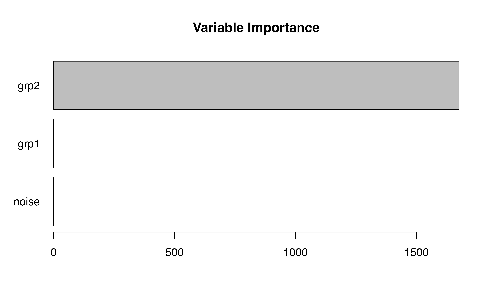

Focus parameters in SEM forests
Andreas M. Brandmaier
2023-11-24
Source:vignettes/semforest-focus.Rmd
semforest-focus.RmdWe first generate a mixture of bivariate normal distributions. The
distributions differ only by their x- and y-displacement, that is, by
their mean values. There are two predictors grp1 and
grp2 which predict the differences in means.
grp1 predicts differences in the first dimension and
grp2 predicts differences in the second dimension. Without
focus parameter, both predictors are needed to distinguish all four
groups. If one of the two means is chosen as a focus parameter, only one
of the two predictors is important.
library(semtree)
#> Loading required package: OpenMx
set.seed(123)
N <- 1000
grp1 <- factor(sample(x = c(0,1), size=N, replace=TRUE))
grp2 <- factor(sample(x = c(0,1), size=N, replace=TRUE))
noise <- factor(sample(x = c(0,1),size=N, replace=TRUE))
Sigma <- matrix(byrow=TRUE,
nrow=2,c(2,0.2,
0.2,1))
obs <- MASS::mvrnorm(N,mu=c(0,0),
Sigma=Sigma)
obs[,1] <- obs[,1] + ifelse(grp1==1,3,0)
obs[,2] <- obs[,2] + ifelse(grp2==1,3,0)
df.biv <- data.frame(obs, grp1, grp2, noise)
names(df.biv)[1:2] <- paste0("x",1:2)
manifests<-c("x1","x2")The following code specifies a bivariate Gaussian model with five parameters:
model.biv <- mxModel("Bivariate_Model",
type="RAM",
manifestVars = manifests,
latentVars = c(),
mxPath(from="x1",to=c("x1","x2"),
free=c(TRUE,TRUE), value=c(1.0,.2) ,
arrows=2, label=c("VAR_x1","COV_x1_x2") ),
mxPath(from="x2",to=c("x2"), free=c(TRUE),
value=c(1.0) , arrows=2, label=c("VAR_x2") ),
mxPath(from="one",to=c("x1","x2"), label=c("mu1","mu2"),
free=TRUE, value=0, arrows=1),
mxData(df.biv, type = "raw")
);
result <- mxRun(model.biv)
#> Running Bivariate_Model with 5 parameters
summary(result)
#> Summary of Bivariate_Model
#>
#> free parameters:
#> name matrix row col Estimate Std.Error A
#> 1 VAR_x1 S x1 x1 4.0583666 0.18149512
#> 2 COV_x1_x2 S x1 x2 0.1970528 0.11385399
#> 3 VAR_x2 S x2 x2 3.1848900 0.14243121
#> 4 mu1 M 1 x1 1.4858354 0.06370452
#> 5 mu2 M 1 x2 1.4551364 0.05643442
#>
#> Model Statistics:
#> | Parameters | Degrees of Freedom | Fit (-2lnL units)
#> Model: 5 1995 8231.944
#> Saturated: 5 1995 NA
#> Independence: 4 1996 NA
#> Number of observations/statistics: 1000/2000
#>
#> Information Criteria:
#> | df Penalty | Parameters Penalty | Sample-Size Adjusted
#> AIC: 4241.944 8241.944 8242.004
#> BIC: -5549.028 8266.483 8250.602
#> CFI: NA
#> TLI: 1 (also known as NNFI)
#> RMSEA: 0 [95% CI (NA, NA)]
#> Prob(RMSEA <= 0.05): NA
#> To get additional fit indices, see help(mxRefModels)
#> timestamp: 2023-11-24 11:22:07
#> Wall clock time: 0.1234992 secs
#> optimizer: SLSQP
#> OpenMx version number: 2.21.1
#> Need help? See help(mxSummary)This is how the data look in a 2D space:
df.biv.pred <- data.frame(df.biv,
leaf=factor(as.numeric(df.biv$grp2)*2+as.numeric(df.biv$grp1)))
ggplot(data = df.biv.pred, aes(x=x1, y=x2, group=leaf))+
geom_density_2d(aes(colour=leaf))+
viridis::scale_color_viridis(discrete=TRUE)+
theme_classic()
Now, we choose the mean of the second dimension mu2 as
focus parameter. We expect that only predictor grp2. This
is what we see in a single tree.
fp <- "mu2" # predicted by grp2
#fp <- "mu1" # predicted by grp1
tree.biv <- semtree(model.biv, data=df.biv, constraints = list(focus.parameters=fp))
plot(tree.biv)Now, we are repeating the same analysis in a forest.
forest <- semforest(model.biv, data=df.biv,
constraints = list(focus.parameters=fp),
control=semforest.control(num.trees=10, control=semtree.control(method="score",alpha=1)))By default, we see that individual trees are fully grown (without a
p-value threshold). The first split is according to grp2
because it best explains the group differences. Subsequent splits are
according to grp1 even though the chi2 values are close to
zero. They only appear because there is no p-value-based stopping
criterion.
plot(forest$forest[[1]])
Now, let us investigate the permutation-based variable importance:
